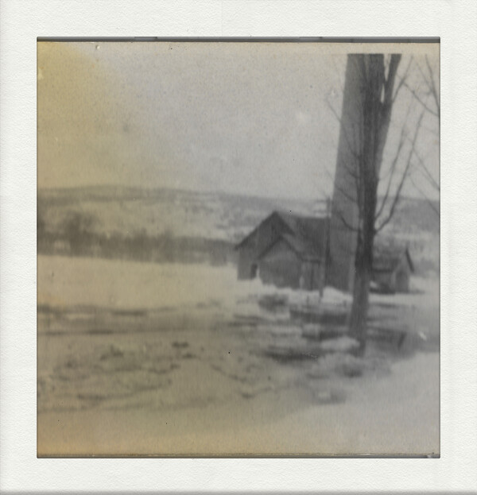

Home
About
Releases
Shows
Videos
Press
Contact
The Lake

Louis Gardner — Piano, Guitar, Banjo, Vibraphone, Vocals, Production
Neda Lipcuite — Backing Vocals
James Edward Armstrong — Master
Released via Whitelab Recs 27/9/25